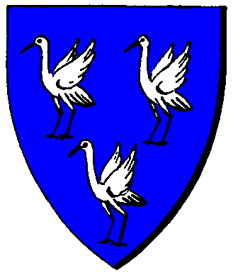

| Übersicht,
Anschläge und Stammtisch (RPG) |
|
Testament
|
| Kydaoye (RIP) |
"Wenn dieser Brief gefunden wird, dann ist es um mich geschehn und ich lebe nicht mehr. Damit meine Seele in frieden ruhen kann gebe ich meine Stadt Androsia ad Argos,welche ich dem werten Spartacus abgekauft habe und alle meine Eigentümer an die werte Sora Steinhauer, möge sie behutsam mit mit dem Besitz umgehen.
Hiermit verabschiede ich mich von allen meinen Freunden und Bekannten und hoffe das ihr noch eine lange Zeit vor euch habt."
letzte grüße
Kydaoye
((Morgen nachmittag ist Kydaoye gelöscht und ich verabschiede mich hiermit erstmal von SW, wünsche euch aber allen noch viel Spass am Spiel^^))
Vormann Kydaoye,
Vorsteher von Argolis ad Argos,
Unfähiger Diener
Zur 12. Stunde am 25.Erntemond im Jahre 442 |
27.06.10 23:04
 |
|
| Spartacus (RIP) |
*schaut sich das Testament an und Lacht nur leicht und denkt sich das man Vereinbarunfgen einhalten muss. Denn Verkauft wurde die Stadt nur mit zwei bedingungen ein Vorkaufsrecht für mich und bei Ableben von des jetztigen besitzers gehen die Rechte der Stadt Androsia ad Argos wieder in besitz von mir über also scheint das Testament nichtig zu sein und schreitet dann wieder von Dannen*
Freiherr Spartacus,
Vorsteher von Lothianis Coast,
Innenminister des Volk von Lothien
Zur 16. Stunde am 26.Erntemond im Jahre 442 |
28.06.10 5:41
|
|
Alekto
|
Süsser die Schwerter nie klingen,
als über ´nen Erbschaftsstreit. *sing*
Alekto |
28.06.10 7:07
|
|
Shalir Norcain-Blutsäufer
  |
Mein Beileid an alle Trauernden.
Mögen Stadt und Habseligkeiten in Frieden ihren Besitzer wechseln.
*schaut kurz zu Spartacus ehe er dann Schulterzuckend den Platz verlässt*
Sir Shalir Norcain,
Vorsteher von Godrics Hollow,
Kardinal im Dienste des einzig wahren Glaubens an Urvan
Zur 24. Stunde am 26.Erntemond im Jahre 442 |
28.06.10 7:27
|
|
| Hubertus vom Wald (RIP) |
*liest das Testament durch und Spartacus`s Fussnote*
Werter Spartacus, die Stadt und das Land wurde vererbt und NICHT verkauft. Welches Vorrecht wollt Ihr dann geltend machen? das Vorerbsrecht?
Hubertus vom Wald
Zur 17. Stunde am 27.Erntemond im Jahre 442 |
28.06.10 11:36
|
|
| Parrakus (RIP) |
*übefliegt die Bemerkung von Spartacus sowie den Einwand von Hubertus*
Wehrter Hubertus vom Wald,
soweit ich erkennen kann, ist dort auch vom "Ableben" die Rede...
Baron Parrakus,
Vorsteher von Drakengard,
Anführer der glorreichen Nation "Sleipnirs vergessene Reiter"
Zur 20. Stunde am 27.Erntemond im Jahre 442 |
28.06.10 12:16
|
|
| Neilani (RIP) |
*Steht vor dem Anschlag und kann es gar nicht glauben. Leise murmelt sie vor sich hin*
Ein unnötiger Tot. Auch wenn ich ihn nicht lange kannte erfüllt es mein Herz mit Trauer.
Neilani
Zur 24. Stunde am 27.Erntemond im Jahre 442 |
28.06.10 13:06
|
|
Lyra Callionymus
  |
*grübelt* - Ich will mich ja nicht einmischen aber wenn er die Stadt vor seinem ableben an Sora Steinhauer übergibt, was ja eindeutig geschehen ist, dann hat er die Stadt weder verkauft, was ein Vorkaufsrecht ausschließt - ebenso hat er sie nicht vererbt.
Er hat vor seinem ableben eine Schenkung durchgeführt.
Deshalb würde ich dem werten Spartacus wiedersprechen.
Freifrau Lyra Callionymus,
Vorsteherin von Schloss Tantopia,
Ehefrau des ehrenwerten Bordret Callionymus
Zur 1. Stunde am 28.Erntemond im Jahre 442 |
28.06.10 13:26
|
|
| Aleja Noita (RIP) |
*Kommt in den Raum und sieht, wer da alles steht und geht zum Anschlagbrett und liest die Zeilen.*
Ich hätte nie gedacht, das Kyd von uns gehen würde. Möge er Ruhe und Frieden finden.
Möge Pheron über ihn wachen!
Aleja Noita,
Verlobte des ehrenwerten Shadow del Morte
Zur 2. Stunde am 28.Erntemond im Jahre 442 |
28.06.10 13:37
|
|
| Chevonne Siobhan (RIP) |
Es ist eigentlich ziemlich eindeutig, dass Spartacus ein Vererben ausgeschlossen hat. Der einzige Weg wäre ein Verkauf gewesen und auch dort hätte er ein Vorkaufsrecht (Rückkaufsrecht wäre wohl passender formuliert gewesen). Da das Ableben vor einem Verkauf stattfand, fällt die Stadt an Spartacus zurück. Und ich denke, dass er mit Fug und Recht jedes Mittel einsetzen kann, um die Stadt wieder in Besitz zu nehmen. Wenn es also nicht Formen annehmen soll, wie es Alekto oben schrieb, oder besser sang, sollte ihm entsprochen werden. Oder wollt Ihr wirklich auf Kydaoyes Grab einen Krieg anzetteln?
Lady Siocán Siobhán,
Vorsteherin von Tortuga,
The Blue Lady
Zur 14. Stunde am 28.Erntemond im Jahre 442 |
28.06.10 16:20
|
|
Ferret
 |
Wenn ein Krieger gebraucht wird, gebt mir Bescheid.
Hohepriester der Unbekannte Krieger,
Hohepriester im Dienste des einzig wahren Glaubens an Urvan,
Anführer der glorreichen Nation "Ritter Lothiens"
Zur 1. Stunde am 29.Erntemond im Jahre 442 |
28.06.10 19:01
|
|
| Johannes Gualbertus (RIP) |
Die sterbliche Hülle ist noch nicht einmal ganz ausgekühlt, da wird auch schon über das Erbe gestritten. SCHÄMT EUCH Ihr solltet Euch in Ruhe zusammensetzen und euch unterhalten und das für und wieder besprecht.
Ich biete mich gern als Vermittler zwischen euch beiden an, da ihr beide gute Freunde seid und ich keinen Streit unter meinen Freunden haben will!
Erzpriester Johannes Gualbertus,
Vorsteher von Johannesburg,
Erzpriester im Dienste des einzig wahren Glaubens an Larja,
Anführer der glorreichen Nation "Volk von Lothien",
Verlobter der reizenden Sylia
Verkünder des Glaubens an Larja
Zur 11. Stunde am 29.Erntemond im Jahre 442 |
28.06.10 21:20
|
|
| Loewen von Aldarion (RIP) |
das beste wäre in dem fall, spartacus sollte den vertrag mal vorlegen und schon wäre dem andenken des teuren toten genüge getan
Markgraf Loewen von Aldarion,
Vorsteher von Wespenforst Süd
Zur 6. Stunde am 32.Erntemond im Jahre 442 |
29.06.10 12:59
|
|
Amhlaidh Doireann
 |
Kydaoye, das hätte ich nicht gedacht. Deine Schulden nicht begleichen aber Wert und Eigentümer anderen Personen übergeben.
Du hättest zumindest annähernd die Schuld über einige Millionen Goldstücke begleichen können.
Wenn man ein Erbe annimmt, dann ganz.
Wer also ersetzt nun meine Goldstücke? *in die Runde blickt*
Kardinal Amhlaidh Doireann,
Kardinal im Dienste des einzig wahren Glaubens an Maki
Zur 12. Stunde am 32.Erntemond im Jahre 442 |
29.06.10 14:22
|
|
| Neilani (RIP) |
Tja werter Amhlaidh,
da werdet ihr wohl niemanden finden der bereitwillig die Schulden von Kydaoye übernimmt. Ihr wisst doch dass die meisten nur an ihre eigenen Vorteile denken.
Neilani
Zur 23. Stunde am 32.Erntemond im Jahre 442 |
29.06.10 16:48
|
|
| Spartacus (RIP) |
kommt nochmal am Anschlagsbrett*
Eigentlich möchte ich nicht solch ein Verfahren eingehen und Leiber den Toten ruhen lassen aber damit einige einsicht mal haben habe ich mein Verwalter den Vertrag mal raussuchen lassen. Wie gut das es solch ein Verwalter gibt.
Kaufvertrag
Kydaoye
2009-12-20 19:38:12 Obejekt Androsia ad Argos.
Käufer
Kydaoye
Verkäufer
Spartacus
Hiermit wird die Stadt siehe oben an den Käufer verkauft samt Tunnel.
Der Käufer verpflichtet sich das Tunnelgebäude von Minotauren frei zu halten. Wird dieses zerstört wir von den Verkäufer kein neues erstattet.
Zu den Bedingungen:
1. Den Verkäufer wird ein Vorkaufsrecht der Stadt eingeräumt sollte diese veräusert werden. Der Angebotene wert sollte den Kaufwert nicht übersteigen. Das Tunnelgebäude wird bei den wert der Stadt berücksichtigt.
2. Sollte der Käufer Versterben gehen somit alle rechte an den Verkäufer sofort zurück.
Der Obejktpreis beträgt 6.000.000 gs (6 millionen)
Hiermit erklären sich die beiden Partein einverstanden.
Verkäufer
Spartacus
Käufer
Kydaoye
*Legt eine Schwarze Rose nierde und zieht dann von dannen*
Baron Spartacus,
Vorsteher von Lothianis Coast,
Innenminister des Volk von Lothien
Zur 1. Stunde am 33.Erntemond im Jahre 442 |
29.06.10 17:27
|
|
| Hadrielia Dornenherz (RIP) |
*Betritt den Anschlag und liest sich so einiges durch, als Hadrie bei der Kopie des Kaufvertrages angelangt ist und es durchgelesen hat, kommt sie zu dem Schluß.Wenn der Verstorbene, diese Stadt vor seinem Ableben, verschenkt hat, ist alles Rechtens und dem werten Herrn Baron Spartakus, steht diese Stadt nicht zu.Denkt sich noch, schlauer Schachzug.
Und geht wieder vom Anschlag weg*
Priesterin Hadrielia Dornenherz,
Vorsteherin von Amon Amdir,
Priesterin im Dienste des einzig wahren Glaubens an Pheron,
Ehefrau des ehrenwerten Dorni Dornenherz
Zur 2. Stunde am 33.Erntemond im Jahre 442 |
29.06.10 17:41
|
|
| Parrakus (RIP) |
Nun wehrte Hadrielia Dornenherz,
wie Ihr dem Titel des Anschlages schon entnehmen könnt, handelt es sich hier nciht um eine Schenkung, sondern um ein Testament, und soweit ich informiert bin, kann man jemanden nur etwas vererben, wenn man ablebt.
Demnach ist es nciht rechtens.
Baron Parrakus,
Vorsteher von Drakengard,
Anführer der glorreichen Nation "Sleipnirs vergessene Reiter"
Zur 4. Stunde am 33.Erntemond im Jahre 442 |
29.06.10 17:58
|
|
| Léras Baroque (RIP) |
*durchließt die Worte von Spartacus und schüttelt den Kopf* Wie tief ist die Welt doch gesunken... *wandelt anschließend von dannen, innerlich denkend..."schon eine intressante fälschung", im geheimen über die Traurigkeit der Situation lachend*
Ritter Léras,
Vorsteher von Cair Paravel
Zur 12. Stunde am 33.Erntemond im Jahre 442 |
29.06.10 19:49
|
|
Demogorgon
|
~als er seinen treuen Freund an diesem Anschlag sieht, geht er auf Léras zu~
Komm Bruder, hier ist unsere Arbeit bereits verrichtet. Diese Seele wird niemand mehr unserer Herrin entreißen....
~grinsend wieder in den dunklen Seitenstraßen verschwindet~
Demogorgon |
29.06.10 19:52
|
|
| Spartacus (RIP) |
*Sieht die Gesichtszüge von léras und denkt sich,
Das solch Anschuldigungen schwere folgen haben können überhaupt daran zu denken. Und vorallem ist es Interressant das ein Ausenstehender das So schnell und leicht beurteilen kann. Vorallen wer mich kennt weiss, das Ich sowas nicht nötig habe und alles geordnet bei mir ist. Genau so wie jeder Vertrag zum Verwalter geht. Vieleicht sollte der Léras erstmal mich kennen bevor man darüber nachdenkt mich zu beschuldigen eine Fälschung hier angeschlagen zu haben. Mh eine gute information für ihn wäre seine Nationsführerin und Lehnsherrin*
Dies wird hier nicht weiter Ausgetragen. Lassen wir den Toten engültig ruhen bitte.
*zeiht dann von dannen*
Baron Spartacus,
Vorsteher von Lothianis Coast,
Innenminister des Volk von Lothien
Zur 6. Stunde am 35.Erntemond im Jahre 442 |
30.06.10 5:45
|
|
Melisandra
  |
ruhe in Frieden ...
Ratsherrin Melisandra,
Vorsteherin von Lothia
Zur 20. Stunde am 35.Erntemond im Jahre 442 |
30.06.10 9:00
|
|
Sora Steinhauer
 |
*schlendert am Anschlag vorbei und ist sich sicher das Maki die richtige Entscheidung treffen wird*
Sora Steinhauer,
Vorsteherin von Argostia
Zur 16. Stunde am 66.Erntemond im Jahre 442 |
07.07.10 13:35
|
|
| Graywolf of Nas`Quellan (RIP) |
Mistkerl - er hätte wenisgtens vor seinem abtreten die Gelder, die er für ne Routenlegung eingeheimst hat zurückzahlen können - denn da ist nix passiert bei uns
Regent Graywolf of Nas`Quellan,
Vorsteher von Heredia,
Anführer der glorreichen Nation "Frankenreich",
Unsterblicher Krautpflanzer Nr. 1
Zur 23. Stunde am 66.Erntemond im Jahre 442 |
07.07.10 15:17
|
|
Asmodai
|
~ Eine Dunkle Gestalt mit tiefgezogener Kapuze betritt den Marktplatz, er liest einige Zeilen und setzt selber welche darunter~
* Mit fester Stimme spricht er zum Volke*
Werte Scherbenbürger,
seit wann kann ein Sterblicher seinen Tod vorraussehen ?
Wer dies kann, soll sich bei mir melden so würde ich diesem Geschöpf gerne die Möglichkeit geben, zu uns zukommen um seine Fähigkeiten sinnvoll zu nutzen.
Dabei den Regenten Graywolf, und einige andere anschaut die der Meinung sind das man vor seinem Ableben seine Schulden begleichen soll.
Selbst mir ist es nicht möglich meinen Tod vorrauszusehen, obwohl mich meine Herrin mit Unsterblichkeit gesegenet hat.
Selbst wir müssen irgendwann einmal sterben wenn die Zeit dazu gekommen ist.
Ihr Lichtsiebengläubige habt einen Horizont der sehr zu wünschen übrig lässt.
~Mit diesen Worten an das Volk, wendet er sich ab und entschwindet in den dunklen Gassen der Stadt~
Asmodai |
07.07.10 15:30
|
|
| Chevonne Siobhan (RIP) |
Wo ist das Problem? Es gibt doch Erben.
Lady Siocán Siobhán,
Vorsteherin von Tortuga,
The Blue Lady
Zur 1. Stunde am 67.Erntemond im Jahre 442 |
07.07.10 15:48
|
|
Sìn Mortiarea
  |
Also das mit der Unsterblichkeit und irgndwann einmal sterben muss mir der Herr mit dem süßlichen Geruch nochmal erklären?
Also wie das geht, so bei einer Person.
Lady Sìn Mortiarea
Zur 7. Stunde am 67.Erntemond im Jahre 442 |
07.07.10 17:08
|
|
Asmodai
|
Sin Mortiarea,
wenn man einer Person den Kopf abschlägt ist dieser Schaden selbst durch einen Gott der einem wohlgesonnen ist, nicht mehr zu heilen.
Du verstehst sicherlich das selbst Untote zu Boden fallen, wenn diesen der Kopf vom Rumpf getrennt wird.
Mehr brauche ich hierzu nicht erklären, da selbst Ihr bestimmt soviel Hirn habt, um dieses Argument nachvollziehen zu können.
Gehabt euch wohl, und haltet immer schön euren Kopf gerade.
Asmodai |
07.07.10 17:31
|
|
Demogorgon
|
~kommt erneut an diesem Anschlag vorbei, dem er schonmal die Aufmerksamkeit schenkte und sieht seinen Bruder~
Bruder Asmodai,
lasst mich dieses der Lady erklären...
~wendet sich an SIn~
Wenn diese Hülle...
~dabei hebt er seine Arme, so dass die Ärmel seines Mantel herabrutschen und die Verwesungen an seinen Armen deutlich zum Vorschein kommen~
...einmal nicht mehr lebensfähig ist, sei es durch äußere Gewalteinwirkung und/oder sonstigen Gegebenheiten, so wird unsere Seele im Reiche Olimanirs eine wohl gedeckte Tafel vorfinden.
Wir sind unsterblich - aber in einer Hülle, welche an die Gesetze der Scherbe gebunden ist, demnach müssen wir uns, wenn diese Hülle einmal gänzlich zerfallen ist, entweder nach einer neuen Hülle umsehen, oder aber den Schritt in das einzig wahre Reich gehen.
~er mustert den Körper Sin´s kurz und schüttelt dann den Kopf leicht~
Aber macht Euch keine Sorgen, Euer ~er überlegt kurz nach einem Alternativen Begriff~ Körper ist alles andere als ansprechend...
~dann lässt er seine Arme wieder sinken und folgt Asmodai~
Demogorgon |
07.07.10 19:15
|
|
Sìn Mortiarea
|
*betrachtet den Arm von Demogorgon und murmelt leise aber hörbar*
Das sieht ja übler aus als die Überreste eines orkischen Gelages.
*in normaler Lautstärke weitersprechend*
Ich würde Euch ja die Dienste meines Heilers anbieten, aber ich befürchte auch er kann da nicht mehr viel machen. Aber es beruhigt mich, dass Euch mein Körper nicht zusagt, ich werde ihn auch kaum jemand anders überlassen und teilen werde ich ihn auch nicht.
Dennoch danke ich Euch beiden für diese ähhm sehr anschaulichen Erklärungen
Lady Sìn Mortiarea
Zur 19. Stunde am 67.Erntemond im Jahre 442 |
07.07.10 19:48
|
|
Übersicht,
Anschläge und Stammtisch (RPG)
|